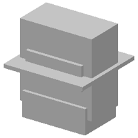

| 정답 |  | | |
| 0 | — | 실행 실패
KeyError: 'result' | 1 import cadquery as cq
2 w0=cq.Workplane('YZ',origin=(50,0,0))
3 w1=cq.Workplane('YZ',origin=(30,0,0))
4 r=w0.sketch().segment((55,1),(56,1)).arc((56,3),(55,5)).close().assemble().finalize().extrude(-120).union(w0.sketch().segment((55,20),(55,21)).arc((54,21),(55,20)).assemble().finalize().extrude(19)).union(w1.sketch().arc((-53,55),(-47,56),(-41,56)).arc((-46,58),(-53,55)).assemble().finalize().extrude(-120)) |
| 250 | — | 실행 실패
SyntaxError: unmatched ')'
1 째 줄 74 째 글자 | 1 cylinder(111,100),(-100.0, 0.0),(-90.0,0.0), (0.0, 0.0), (0,0.0), (0,0.0)).close()..Workplane('ZX',origin=(0,0,0)) ^
2 b0,0.0),(-100.0,0.0),(-90.0,0.0),(-90.0,0.0),(-90.0,0.0),(-100.0,0.0),(-90.0,0.0),(-90.0,0.0),(-90.0,0.0),(-90.0,0.0),(-100.0,0.0),(-90.0,0.0),(-90.0,0.0),(-90.0,0.0),(-90.0,0.0),(-90.0,0.0),(-90.0,0.0),(-90.0,0.0),(-90.0,0.0),(-90.0,0.0),(-90.0,0.0),(-90.0,0.0),(-90.0,0.0),(-90.0,0.0),(-90.0,0.0),(-90.0,0.0),(-90.0,0.0),(-90.0,0.0),(-90.0,0.0),(-90.0,0.0),(-90.0,0.0),(-90.0,0.0),(-90.0,0.0),(-90.0,0.0),(-90.0,0.0),(-90.0,0.0),(-90.0,0.0),(-90.0,0.0),(-90.0,0.0),(-90.0,0.0),(-90.0,0.0),(-90.0,0.0),(-90.0,0.0),(-90.0,0.0),(-90.0,0.0),(-90.0,0.0),(-90.0,0.0),(-90.0,0.0),(-90.0,0.0),(-90.0,0.0),(-90.0,0.0),(-90.0,0.0),(-90.0,0.0),(-90.0,0.0),(-90.0,0.0),(-90.0,0.0),(-90.0,0.0),(-90.0,0.0),(-90.0,0.0),(-90.0,0.0),(-90.0,0.0),(-90.0,0.0),(-90.0,0.0),(-90.0,0.0),(-90.0,0.0),(-90.0,0.0),(-90.0,0.0),(-90.0,0.0),(-90.0,0.0),(-90.0,0.0),(-90.0,0.0),(-90.0,0.0),(-90.0,0.0),(-90.0,0.0),(-90.0,0.0),(-90.0,0.0),(-90.0,0.0),(-90.0,0.0),(-90.0,0.0),(-90.0,0.0),(-90.0,0.0),(-90.0,0.0),(-90.0,0.0),(-90.0,0.0),(-90.0,0.0),(-90.0,0.0),(-90.0,0.0),(-90.0,0.0),(-90.0,0.0),(-90.0,0.0),(-90.0,0.0),(-90.0,0.0),(-90.0,0.0),(-90.0,0.0),(-90.0,0.0),(-9 |
| 500 | — | 실행 실패
SyntaxError: unterminated string literal (detected at line 1)
1 째 줄 175 째 글자 | 1 layout = [("box", "x", (0.0, 0.0, 0.0)), ("box", "z", (0.0, -13.7, 0.0)), ("box", "z", (0.0, -13.7, 0.0)), ("box", "y", (0.0, -13.7, 0.0)), ("box", "y", (3.0, -21.7, 0.0)), ("box(3.3, -4.3, -1.2))) ^
2 b0 = at(0, cq.Workplane("XY").box(35.6, -11.7, 0.0)), ("box(35.6, -11.7, 0.0)), ("box(35.6, -11.7, -1.2), (10.7, -1.1), (10.7, 15.7), (0.0, 15.7), (0.0, 20.7), (0.0, 21.7), (0.0, 22.7), (0.0, 23.7), (0.0, 24.7), (0.0, 25.7), (0.0, 26.7), (0.0, 27.7), (0.0, 28.7), (0.0, 29.7), (0.0, 30.7), (0.0, 29.7), (0.0, 28.7), (0.0, 27.7), (0.0, 26.7), (0.0, 25.7), (0.0, 24.7), (0.0, 23.7), (0.0, 22.7), (0.0, 21.7), (0.0, 20.7), (0.0, 19.7), (0.0, 18.7), (0.0, 17.7), (0.0, 16.7), (0.0, 15.7), (0.0, 13.7), (0.0, 12.7), (0.0, 11.7), (0.0, 9.6), (0.0, 8.6), (0.0, 7.6), (0.0, 6.6), (0.0, 5.6), (0.0, 5.4), (0.0, 4.4), (0.0, 3.4), (0.0, 2.6), (0.0, 1.6), (0.0, 1.6), (0.0, 16.7), (0.0, 13.7), (0.0, 12.7), (0.0, 11.7), (0.0, 10.6), (0.0, 9.6), (0.0, 8.6), (0.0, 7.6), (0.0, 6.6), (0.0, 6.6), (0.0, 7.6), (0.0, 8.6), (0.0, 9.6), (0.0, 10.6), (0.0, 12.6), (0.0, 13.6), (0.0, 15.6), (0.0, 16.6), (0.0, 17.6), (0.0, 18.0), (0.0, 19.0), (0.0, 19.0), (0.0, 18.0), (0.0, 17.0), (0.0, 16.0), (0.0, 15.0), (0.0, 14.0), (0.0, 13.0), (0.0, 12.0), (0.0, 11.0), (0.0, 10.0), (0.0, 9.6), (0.0, 8.6), (0.0, 7.6), ( |
| 750 | — | 실행 실패
SyntaxError: unterminated string literal (detected at line 1)
1 째 줄 231 째 글자 | 1 layout = [("revolve", "z", (0.0, 0.0, 0.0)), ("revolve", "z", (0.0, 0.0, -22.7)), ("revolve", "z", (0.0, 0.0, -22.7)), ("revolve", "z", (0.0, 0.0, -22.7)), ("revolve", "z", (0.0, 0.0, -22.7)), ("result", "z", (0.0, 0.0, -22.7)), ("result = b0, 0, 0, 22.7)).center(1.0, 1.1, 0.1, 0.0, 22.7))) ^
2 b0 = at(0, cq.Workplane("XY").add(cq.Workplane("XY").add(cq.Workplane("XY").add(cq.Workplane("XY").add(cq.Workplane("XY").add(cq.Workplane("XY").polyline([(0, 0, 22.7)).center(1.3, 1.1, 11.1))
3 b1 = at(1, cq.Workplane("XY").add(cq.Workplane("XY").polyline([(0, 0, 22.7)).center(1.3, 1.1, 11.1))
4 b1.union(b1.union(b26.8)), (0, 0, 11.1)).center(1.4, 3.1, 10.1)).cutBlind(-10.1, 0.0, 11.1)).center(1.4, 1.1, 11.1))
5 b1 = at(1, cq.Workplane("XY").add(cq.Workplane("XY").polyline([(0, 0, 11.1)).arc((0, 1.1),(1,0)).close().assemble()).finalize().extrude(30.5).faces(">Z").workplane(origin=(0, 0, 11.1)).arc((0, 1.1),(1,0)).close().extrude(30.5)).cut(b2.union(b2.union(b3.union(b4)) |
| 1000 | — | 실행 실패
SyntaxError: '(' was never closed
7 째 줄 8 째 글자 | 1 layout = [("revolve", "z", (0.0, 0.0, 0.0)), ("revolve", "z", (0.0, 0.0, -22.7)), ("revolve", "z", (0.0, 0.0, -22.7)), ("revolve", "z", (0.0, 0.0, -22.7)), ("revolve", "z", (0.0, 0.0, -22.7)), ("revolve", "z", (0.0, 0.0, -22.7))]
2 b0 = at(0, cq.Workplane("XZ").polyline([(0.0, 0.0), (28.6, 0.0), (28.6, 22.2), (15.8, 22.2), (15.8, 7.3), (0.0, 7.3)]).close().revolve(360, (0, 0, 0), (0, 1, 0)).faces(">Z").workplane(origin=(0, 0, 22.2)).center(1.1, -1.1).hole(11.7))
3 b1 = at(1, cq.Workplane("XZ").polyline([(0.0, 0.0), (28.6, 0.0), (28.6, 22.2), (13.5, 22.2), (13.5, 6.8), (0.0, 6.8)]).close().revolve(360, (0, 0, 0), (0, 1, 0)).faces(">Z").workplane(origin=(0, 0, 22.2)).center(10.5, 11.1).hole(15.5, 10.8))
4 b2 = at(2, cq.Workplane("XZ").polyline([(0.0, 0.0), (28.6, 0.0), (28.6, 22.2), (14.5, 22.2), (14.5, 6.5), (0.0, 6.5)]).close().revolve(360, (0, 0, 0), (0, 1, 0)).faces(">Z").workplane(origin=(0, 0, 22.2)).center(-10.5, 10.0).hole(10.7))
5 b2 = at(2, cq.Workplane("XZ").polyline([(0.0, 0.0), (17.0, 0.0), (17.0, 22.2), (6.5, 22.2), (6.5, 6.5), (0.0, 6.5)]).close().revolve(360, (0, 0, 0), (0, 1, 0)).faces(">Z").workplane(origin=(0, 0, 22.2)).center(-10.5, 10.0).hole(10.7))
6 b4 = at(4, cq.Workplane("XZ").polyline([(0.0, 0.0), (17.0, 0.0), (17.0, 22.2), (6.5, 22.2), (6.5, 7.5), (0.0, 7.5)]).close().revolve(360, (0, 0, 0), (0, 1, 0)))
7 b5 = at(5, cq.Workplane("XY").add(cq.Workplane("XY").polyline([(0.0, 0.0), (17.0, 0.0), (17.0, 22.2), (6.5, 22.2), (6.5, 7.5), (0.0, 7.5)]).close().revolve(360, (0, 0, 0), (0, 1, 0))) ^
8 result = b0.union(b1.union(b2.union(b3))) |
| 1250 | — | 실행 실패
SyntaxError: invalid syntax. Perhaps you forgot a comma?
2 째 줄 12 째 글자 | 1 layout = [("revolve", "z", (0.0, 0.0, 0.0)), ("revolve", "z", (0.0, 0.0, -22.9)), ("revolve", "z", (0.0, 0.0, -22.9)), ("revolve", "z", (0.0, 0.0, -22.9)), ("revolve", "z", (0.0, 0.0, -22.9)), ("revolve", "z", (0.0, 0.0, -22.9)), ("revolve", "z", (0.0, 0.0, -22.9)), ("revolve", "z", (0.0, 0.0, -22.9)), ("revolve", "z", (0.0, 0.0, -22.9)), ("box", "z", (0.0, 0.0, 22.9)), ("box", "z", (0.0, 0.0, 22.9))]
2 b0 = at(0, cq.Workplane("XY").add(cq.Workplane("XY").box(38.1, 24.8, 11.1, centered=(True, True, False)).faces(">Z").workplane(origin=(0, 0, 11.1)).center(1.1, -1.1).hole(11.1, 11.1)) ^
3 b1 = at(1, cq.Workplane("XY").circle(29.2).extrude(33.1).faces(">Z").workplane(origin=(0, 0, 33.1)).center(-1.1, 1.1).hole(11.1, 1.1).edges("|Z").fillet(3.4))
4 b2 = at(2, cq.Workplane("XY").circle(26.0).extrude(29.7).faces(">Z").workplane(origin=(0, 0, 29.7)).center(-1.1, 1.1).hole(11.1, 1.1).edges("|Z").fillet(3.4))
5 b3 = at(3, cq.Workplane("XY").circle(26.0).extrude(29.7))
6 result = b0.union(b1.union(b2.union(b3.union(b4))) |
| 1500 | — | 실행 실패
SyntaxError: invalid syntax. Perhaps you forgot a comma?
4 째 줄 12 째 글자 | 1 layout = [("revolve", "x", (0.0, 0.0, 0.0)), ("revolve", "y", (0.0, 0.0, -22.2)), ("revolve", "z", (0.0, 0.0, -22.2)), ("revolve", "z", (0.0, -22.2, -22.2))]
2 b0 = at(0, cq.Workplane("XZ").polyline([(0.0, 0.0), (22.0, 0.0), (22.0, 11.8), (15.5, 11.8), (15.5, 21.3), (0.0, 21.3)]).close().revolve(360, (0, 0, 0), (0, 1, 0)).faces(">Z").workplane(origin=(0, 0, 21.3)).center(-1.1, -1.1).hole(11.1, 11.1))
3 b1 = at(1, cq.Workplane("XY").box(31.2, 24.8, 13.0, centered=(True, True, False)).faces(">Z").workplane(origin=(0, 0, 13.0)).center(1.1, -1.1).hole(11.1, 10.0))
4 b2 = at(2, cq.Workplane("XY").add(cq.Workplane("XY").box(44.1, 27.1, 13.0, centered=(True, True, False)).faces(">Z").workplane(origin=(0, 0, 13.0)).center(1.5, -1.1).hole(10.7, 11.0)) ^
5 b3 = at(3, cq.Workplane("XY").add(cq.Workplane("XY").box(44.1, 24.8, 13.0, centered=(True, True, False)).faces(">Z").workplane(origin=(0, 0, 13.0)).center(1.5, -1.1).hole(10.6, 10.0))
6 b4 = at(4, cq.Workplane("XZ").polyline([(0.0, 0.0), (22.0, 0.0), (22.0, 11.8), (15.8, 11.8), (15.8, 20.3), (0.0, 20.3)]).close().revolve(360, (0, 0, 0), (0, 1, 0)).faces(">Z").workplane(origin=(0, 0, 20.3)).center(10.7, -1.1).hole(10.6, 11.7))
7 result = b0.union(b1.union(b2.union(b3.union(b4.union(b5))))) |
| 1750 |  | IoU 0.57 | 1 layout = [("revolve", "z", (0.0, 0.0, 0.0)), ("box", "z", (0.0, 0.0, 21.2)), ("box", "z", (0.0, 0.0, 21.2)), ("box", "z", (0.0, 0.0, 21.2)), ("box", "y", (0.0, 0.0, 21.2)), ("box", "z", (0.0, 0.0, 21.2)), ("revolve", "z", (0.0, 0.0, 21.2)), ("box", "y", (0.0, 0.0, 21.2)), ("box", "y", (0.0, 0.0, 21.2))]
2 b0 = at(0, cq.Workplane("XY").box(35.1, 24.4, 13.3, centered=(True, True, False)).faces(">Z").workplane(origin=(0, 0, 13.3)).center(1.1, -1.1).hole(1.1, 1.1).faces(">Z").workplane(origin=(0, 0, 13.3)).center(1.1, -1.1).hole(1.1, 1.1))
3 b1 = at(1, cq.Workplane("XY").box(31.1, 24.8, 13.1, centered=(True, True, False)).faces(">Z").workplane(origin=(0, 0, 13.1)).center(1.1, -1.1).hole(1.1, 1.1).faces(">Z").workplane(origin=(0, 0, 13.1)).center(1.3, -1.1).hole(10.1, 11.1))
4 b2 = at(2, cq.Workplane("XY").box(44.1, 41.3, 2.0, centered=(True, True, False)).faces(">Z").workplane(origin=(0, 0, 2.0)).center(1.1, 1.1).hole(1.1, 1.0).faces(">Z").workplane(origin=(0, 0, 2.0)).center(1.3, -1.1).hole(10.1, 1.1))
5 b3 = at(3, cq.Workplane("XY").box(44.1, 41.4, 2.0, centered=(True, True, False)).faces(">Z").workplane(origin=(0, 0, 2.0)).center(1.4, 1.1).hole(1.2, 1.0).faces(">Z").workplane(origin=(0, 0, 2.0)).center(1.4, 1.0).hole(1.1, 1.0))
6 b4 = at(4, cq.Workplane("XY").box(40.1, 41.4, 21.0, centered=(True, True, False)).faces(">Z").workplane(origin=(0, 0, 21.0)).center(1.5, 1.1).hole(1.2))
7 result = b0.union(b1.union(b2.union(b3.union(b4)))) |
| 2000 | — | 실행 실패
SyntaxError: unterminated string literal (detected at line 1)
1 째 줄 831 째 글자 | 1 layout = [("revolve", "z", (0.0, 0.0, 0.0)), ("box", "z", (0.0, 0.0, -22.8)), ("revolve", "z", (0.0, 0.0, -22.8)), ("box", "z", (0.0, 0.0, -22.8)), ("box", "x", (0.0, 0.0, -22.8)), ("box", "z", (0.0, 0.0, -22.8)), ("box", "x", (0.0, 0.0, -22.8)), ("box", "x", (0.0, 0.0, -22.8)), ("box", "x", (0.0, 0.0, -22.8)), ("box", "x", (0.0, 0.0, -22.8)), ("box", "x", (0.0, 0.0, -22.8)), ("box(36.0, 39.1, -22.8, -22.8),(-19.6, 0.0), (19.6, 0.0), (19.6, 11.1), (0.0, 11.1)]).segment((0, 0.0), (20.0, 0.0), (20.0, 12.2), (0.0, 12.2)]).segment((0, 0.0), (0, 16.3), (0.0, 16.3), (0.0, 17.1), (0.0, 18.1), (0.0, 19.1), (0.0, 19.1), (0.0, 18.1), (0.0, 17.1), (0.0, 16.0), (0.0, 15.0), (0.0, 14.0), (0.0, 13.0), (0.0, 12.0)]).rect(36.0, 10.0, 0.0, 10.0, 2.0).faces(">Z").workplane(origin=(0, 0, 10.0)).center(1.1, -1.1).hole(10.7, 1.1).faces(">Z").workplane(origin=(0, 0, 10.0)).center(1.1, -1.1).hole(10.6, 1.1)) ^
2 b1 = at(1, cq.Workplane("XY").box(36.1, 36.1, 21.0, centered=(True, True, False)).faces(">Z").workplane(origin=(0, 0, 21.0)).center(-10.7, -1.1).hole(10.7, 1.1).edges("|Z").fillet(3.5))
3 result = b0.union(b1.union(b2.union(b3))) |
| 2250 | — | 실행 실패
SyntaxError: invalid syntax. Perhaps you forgot a comma?
1 째 줄 418 째 글자 | 1 layout = [("revolve", "x", (0.0, 0.0, 0.0)), ("revolve", "y", (0.0, 0.0, -22.8)), ("revolve", "z", (0.0, 0.0, -22.8)), ("box", "z", (0.0, 0.0, -22.8)), ("box", "x", (0.0, 0.0, -22.8)), ("box", "x", (0.0, 0.0, -22.8)), ("box", "x", (0.0, 0.0, -22.8)), ("box", "x", (0.0, 0.0, -22.8)), ("box", "x", (0.0, 0.0, -22.8)), ("box", "x", (0.0, 0.0, -22.8)), ("box", "x", (0.0, 0.0, -22.8)), ("box", "x", (0.0, 0.0, -22.8)), ("box(36.0, 35.0, -22.8, -22.8)), ("box(36.0, 35.0, -22.8, -22.8))] ^
2 b0 = at(0, cq.Workplane("XY").add(cq.Workplane("XY").circle(20.0).extrude(27.3).faces(">Z").workplane(origin=(0, 0, 27.3)).center(1.9, -1.1).hole(11.1).faces(">Z").workplane(origin=(0, 0, 27.3)).center(1.1, 1.1).hole(1.1, 1.1))
3 b2 = at(2, cq.Workplane("XY").box(44.1, 33.1, 2.1, centered=(True, True, False)).faces(">Z").workplane(origin=(0, 0, 2.1)).center(1.1, -1.1).hole(1.2, 1.1).edges("|Z").fillet(3.5))
4 b3 = at(3, cq.Workplane("XY").box(44.1, 34.1, 21.0, centered=(True, True, False)).faces(">Z").workplane(origin=(0, 0, 21.0)).center(-10.7, 1.1).hole(10.2, 1.1).edges("|Z").fillet(3.4))
5 result = b0.union(b1.union(b2.union(b3.union(b4)))) |
| 2500 | — | 실행 실패
SyntaxError: closing parenthesis ']' does not match opening parenthesis '('
1 째 줄 520 째 글자 | 1 layout = [("revolve", "z", (0.0, 0.0, 0.0)), ("revolve", "y", (0.0, 0.0, -22.8)), ("revolve", "z", (0.0, 0.0, -22.8)), ("box", "z", (0.0, 0.0, -22.8)), ("box", "x", (0.0, 0.0, -22.8)), ("box", "z", (0.0, 0.0, -22.8)), ("box", "x", (0.0, 0.0, -22.8)), ("box", "x", (0.0, 0.0, -22.8)), ("box", "x", (0.0, 0.0, -22.8)), ("box", "x", (0.0, 0.0, -22.8)), ("box", "x", (0.0, 0.0, -22.8)), ("box", "x", (0.0, 0.0, -22.8)), ("box", "x", (0.0, 0.0, -22.8 (-36.2), (2.0, 0.0), (2.0, 11.1), (13.0, 11.1), (13.0, 31.8), (0.0, 31.8)]).close().revolve(360, (0, 0, 0), (0, 1, 0))) ^
2 b1 = at(1, cq.Workplane("XY").box(36.1, 31.8, 10.0, centered=(True, True, False)).faces(">Z").workplane(origin=(0, 0, 10.0)).center(-1.1, -1.1).hole(11.1, 11.1))
3 b2 = at(2, cq.Workplane("XY").box(36.1, 34.8, 10.0, centered=(True, True, False)).faces(">Z").workplane(origin=(0, 0, 10.0)).center(-1.1, -1.1).hole(10.1, 1.1).faces(">Z").workplane(origin=(0, 0, 10.0)).center(-1.1, -1.1).hole(10.0, 1.1))
4 b3 = at(3, cq.Workplane("XY").box(44.1, 32.0, 2.0, centered=(True, True, False)).faces(">Z").workplane(origin=(0, 0, 2.0)).center(-1.1, 1.1).hole(1.1, 1.1).faces(">Z").workplane(origin=(0, 0, 2.0)).center(-1.1, 1.1).hole(1.1, 1.1))
5 b5 = at(5, cq.Workplane("XY").box(44.1, 33.1, 11.0, centered=(True, True, False)).faces(">Z").workplane(origin=(0, 0, 11.0)).center(-1.1, -1.1).hole(1.2, 1.1).edges("|Z").fillet(2.4))
6 b5 = at(5, cq.Workplane("XY").box(36.1, 32.1, 10.0, centered=(True, True, False)).faces(">Z").workplane(origin=(0, 0, 10.0)).center(-1.1, 1.1).hole(1.1, 1.1))
7 result = b0.union(b1.union(b2.union(b3.union(b4.union(b5))))) |
| 2750 | — | 실행 실패
SyntaxError: unterminated string literal (detected at line 1)
1 째 줄 494 째 글자 | 1 layout = [("revolve", "z", (0.0, 0.0, 0.0)), ("revolve", "y", (0.0, 0.0, -22.8)), ("box", "z", (0.0, 0.0, -22.8)), ("box", "z", (0.0, 0.0, -22.8)), ("box", "x", (0.0, 0.0, -22.8)), ("box", "x", (0.0, 0.0, -22.8)), ("box", "x", (0.0, -22.8, -22.8)), ("box", "x", (0.0, 0.0, -22.8)), ("box", "x", (0.0, -22.8, -22.8)), ("box", "x", (0.0, -22.8, -22.8)), ("box", "x", (0.0, -22.8, -22.8)), ("box", "x", (0.0, -22.8, -22.8)), ("box", "x", (0.0, -22.8, -22.8)), ("box", "x", (0.0, -22.8, -22.8)), ("box(36.0, 22.0, -22.8, -22.0))] ^
2 b0 = at(0, cq.Workplane("XY").box(35.1, 35.0, 22.0, centered=(True, True, False)).faces(">Z").workplane(origin=(0, 0, 22.0)).center(-1.1, -1.1).hole(1.1, 1.1).faces(">Z").workplane(origin=(0, 0, 22.0)).center(1.1, 1.1).hole(1.1, 1.1))
3 b1 = at(1, cq.Workplane("XY").box(31.2, 33.0, 15.0, centered=(True, True, False)).faces(">Z").workplane(origin=(0, 0, 15.0)).center(1.1, -1.1).hole(1.1, 1.1).edges("|Z").fillet(2.0))
4 b2 = at(2, cq.Workplane("XY").box(47.5, 43.1, 21.0, centered=(True, True, False)).faces(">Z").workplane(origin=(0, 0, 21.0)).center(-1.1, 1.1).hole(1.1, 1.1).faces(">Z").workplane(origin=(0, 0, 21.0)).center(1.1, 1.1).hole(1.1, 1.1))
5 b3 = at(3, cq.Workplane("XY").box(44.1, 33.0, 21.0, centered=(True, True, False)).faces(">Z").workplane(origin=(0, 0, 21.0)).center(1.1, -1.1).hole(1.1, 1.1).edges("|Z").fillet(1.4))
6 result = b0.union(b1.union(b2.union(b3.union(b4)))) |
| 3000 | — | 실행 실패
SyntaxError: unterminated string literal (detected at line 1)
1 째 줄 453 째 글자 | 1 layout = [("revolve", "z", (0.0, 0.0, 0.0)), ("revolve", "y", (0.0, 0.0, -22.8)), ("revolve", "z", (0.0, 0.0, -22.8)), ("box", "z", (0.0, 0.0, -22.8)), ("box", "x", (0.0, 0.0, -22.8)), ("box", "z", (0.0, 0.0, -22.8)), ("box", "x", (0.0, 0.0, -22.8)), ("box", "x", (0.0, 0.0, -22.8)), ("box", "x", (0.0, 0.0, -22.8)), ("box", "x", (0.0, 0.0, -22.8)), ("box", "x", (0.0, 0.0, -22.8)), ("box", "x", (0.0, 0.0, -22.8)), ("box", "x", (0.0, -22.8, -22.8)), ("box(36.0, 36.0, -22.8, -22.8))] ^
2 b0 = at(0, cq.Workplane("XY").add(cq.Workplane("XY").circle(20.0).extrude(27.3).faces(">Z").workplane(origin=(0, 0, 27.3)).center(1.5, -1.1).hole(11.1).faces(">Z").workplane(origin=(0, 0, 27.3)).center(1.1, -1.1).hole(11.1, 11.0))
3 b1 = at(1, cq.Workplane("XY").box(44.1, 33.1, 2.1, centered=(True, True, False)).faces(">Z").workplane(origin=(0, 0, 2.1)).center(10.1, 1.1).hole(10.2, 1.1))
4 b2 = at(2, cq.Workplane("XY").box(44.1, 44.4, 2.1, centered=(True, True, False)).faces(">Z").workplane(origin=(0, 0, 2.1)).center(10.1, 1.1).hole(10.2, 1.1).edges("|Z").fillet(2.5))
5 b3 = at(3, cq.Workplane("XY").box(47.1, 44.4, 2.2, centered=(True, True, False)).faces(">Z").workplane(origin=(0, 0, 2.2)).center(10.5, -1.1).hole(10.3, 1.1).edges("|Z").fillet(2.4))
6 b4 = at(4, cq.Workplane("XY").box(47.1, 44.4, 2.2, centered=(True, True, False)).faces(">Z").workplane(origin=(0, 0, 2.2)).center(10.5, 1.1).hole(10.3, 1.1).edges("|Z").fillet(1.4))
7 result = b0.union(b1.union(b2.union(b3.union(b4)))) |